「 猫と生きる 」
猫に救われた時間から
生まれた絵たち
この絵たちは
猫に救われた時間から
生まれました
共に生きる未来を
願いながら
12か月の物語
-
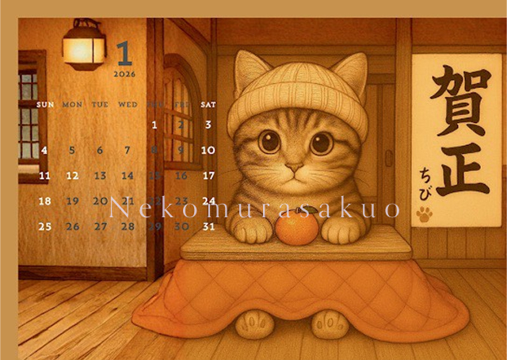 カレンダーを作ろうと考えた時、
この構図はすぐ浮かびました …カレンダーを作ろうと考えた時、
この構図はすぐ浮かびました。最初は部屋のインテリアを
ものすごく考えて、
凝った作りにしましたが
やっぱり、ちびを主役にしたくて
背景はシンプルなものにしました。ちびの書き初めの足跡は
AIがなかなか理解してくれなくて。なぜそれを書き初めに書くのか
その意味を話し合って
ようやく書いてもらえたのですが、
これは大変な仕事になるな、
と思いました。一月が好きだと言ってくださる方が
多いのも印象に残っています。 -
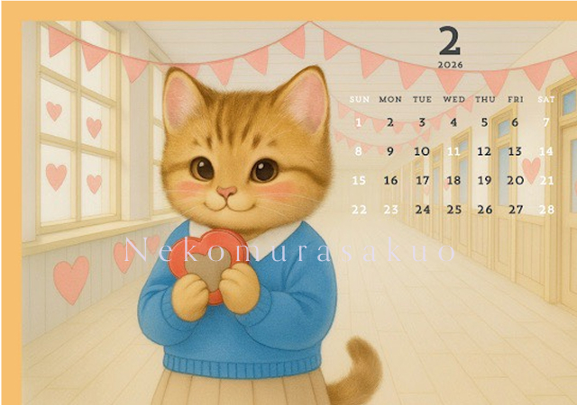 カレンダーの隠れ要素として、
一月から少しずつ成長し …カレンダーの隠れ要素として、
一月から少しずつ成長し
大人になっていくちびを
描こうとしていました。ですが、校舎の廊下に立つちびができた時
その考えはなくなりましたね。この2月の写真が使いたいためです。
この一枚が、私の絵の
大きな転機になった気がします。猫に人間の表情を加味しても
あんまり違和感がないどころか、
凄く魅力的になるとわかった。リアル絵に寄せても
ちびの可愛さが
伝わるとわかった最初は普通に
ハラマキキャッツとして
描いていたのですが、
これができたときは
本当に、ちょっと震えました。自分の人生が変わるかもしれないと
思える絵ですね。その意味で
私は1番これが好きです。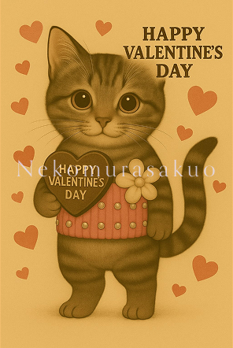 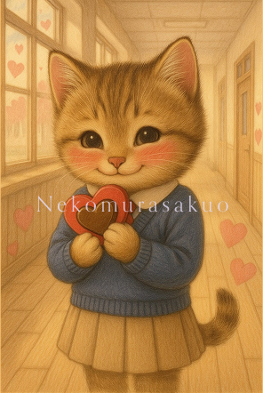 -

3月はひな祭りで決めて
いました。トラとシロを …3月はひな祭りで決めていました。
トラとシロを
どこがで出したいなと
思ったんですが
お内裏様だと1人欠け、
3人官女だと1人足りない。5人囃子なら
ちびが育てた子供達を
みんな載せられる。モカちゃん、ハッピーちゃんを
もらってくれた方にも
送るつもりだったので、
入れようと思いました。ただ、AIは大人数の
細かい部分を修正するのが
苦手なんです。だから、ある点を直すと
ある点がおかしくなり、
とても時間がかかりました。これだけで
1日の生成数の上限に
達したことがありますし、
合計で30時間は
修正したと思います。10月くらいから作り始めて
途中辛くなって、
しばらく創作をやめた時期が
ありましたね。でも妥協しなくてよかったです。
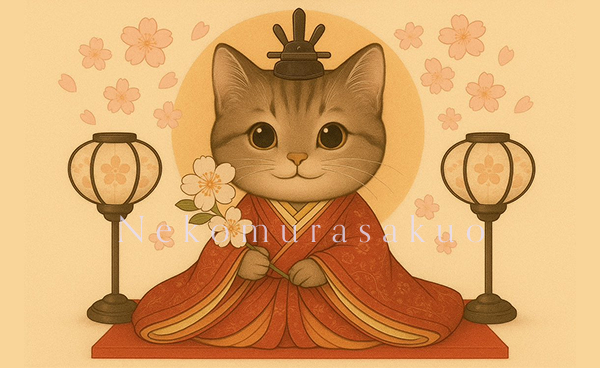 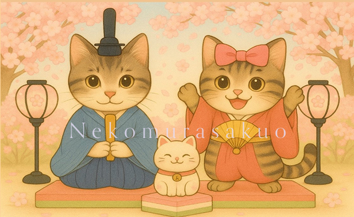 -
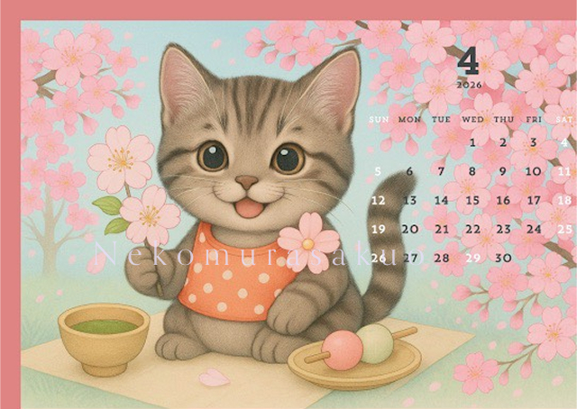 3月は構成を凝りすぎて
時間がかかったので …3月は構成を凝りすぎて
時間がかかったので、
4月はシンプルに
お花見をするちびにしました。これはできるのがすごく早かった。
ボツ作品も
表情の違いだけですね。どんどん頭身を縮めて、
ほとんど２頭身にしたけど
違和感はなかった。生まれて数ヶ月の子猫って
体の割に
頭が大きいですよね。あのフォルムをみると
母性が溢れるように
なってるのかもしれないですね。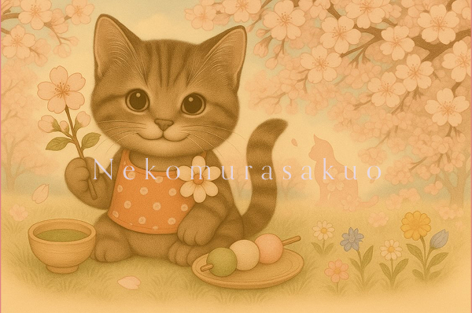 -
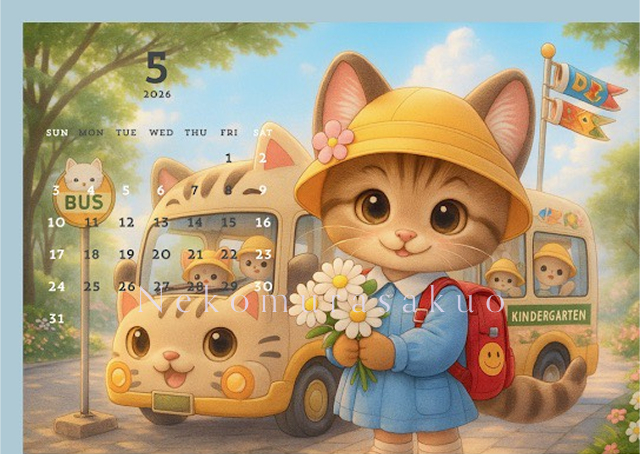 5月はちょっとタッチを変えて、
はっきりとした線で …5月はちょっとタッチを変えて、
はっきりとした線で描いています。初めて出すので
どんな絵が好まれるのか、
マーケティングしたいと
考えました。おそらくこれは
人気が無いと思います。小学生なのは
年齢を徐々に上げていこうと考えた一環ですね。5月って割と鯉のぼりとか、
描き尽くされてるので
難しかった。1番、納得いかないまま
出してる絵ですね。もっとやれることがあったと思います。
-
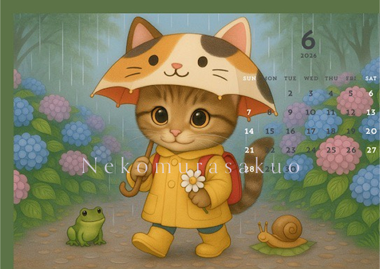 6月はフロントはリアル、
背景はボカシで作りました …6月はフロントはリアル、
背景はボカシで作りました。この頃は、果たして
季節に合わせた絵にしないと
いけないんだろうかと
悩んでいた頃ですね。最後の方は
その縛りをやめるんですが、
季節に沿うことで
絵が作業的に完成してしまうのが、
全然楽しくなくて。やっぱり私は
人を驚かせたり
意外性のある絵を描きたい
という欲求があるみたいです。あと、猫の傘って作ったら
売れそうだなと思いました。 -
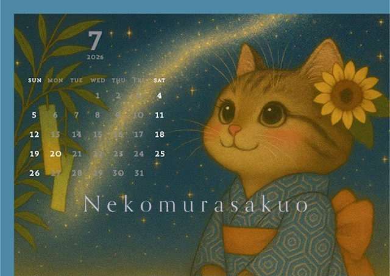 7月はちびに和服を着せたら
どうかなと思って …7月はちびに和服を着せたら
どうかなと思って、
作ってみたら良く似合うので
七夕とあわせました。この時、着物の模様とか
いろいろ調べてて
いろんな模様で
いっぱい描いたのですが
保存してなかったです。着物の模様やアクセサリー
微妙な表情など
小さな部分を拘ることを
私の絵の特徴にしていきたいな、と思っています。この絵は割と好きですね。
-
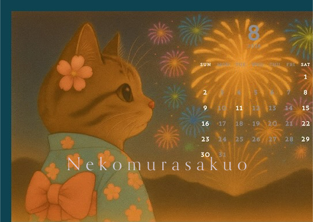 8月もほぼ迷いなく作れました。
ここで奇跡が起こったんです …8月もほぼ迷いなく作れました。
ここで奇跡が起こったんです。
まず、私は1月1枚の
壁掛けカレンダーで
作成を依頼していました。しかし、リングで繋がれた
上下2枚で2か月の
壁掛けカレンダーに
なっていたんです。そして、入稿例は
上に絵を一枚
下に2か月分の日付を
印刷する仕様になっていた。終わった、
と思いました。絵は6枚しか貼れない
半分は捨てるしかない、と。しかし、友人の水野先生が
絵の中にカレンダーを入れる
というアイデアで
絵を12枚おさめてくれたんです。そして、
届いたカレンダーをみたら
7月と8月が
向かい合う構図になって
2枚がめちゃくちゃ映える
デザインになっていました。これは本当に
偶然の産物なんですよ。水野先生には感謝しかないです。
-
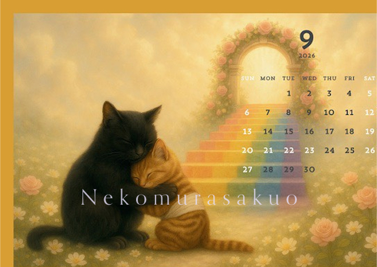 9月はちびが亡くなった月なので
それに関することを …9月はちびが亡くなった月なので、
それに関することを
描きたいなと思いました。ペットは虹の橋を渡って
天国に行くという話があります。カレンダーに生き物の死に関して
描くのはどうなのか、
という迷いがありましたが
私のフォロワーさんなら
わかってくれるだろうと思いました。亡くなったとしても
また会えるということを
私は信じていますし、
多くの飼い主さんも
そうであろうと思っています。バスから降りて
母親に抱きつく絵も
好きなんですが
露骨に天国と書くのは
なんだか狙いすぎていて
むずむずするのでやめました。この月の絵が1番人気です。
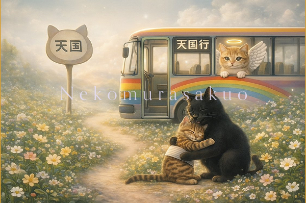 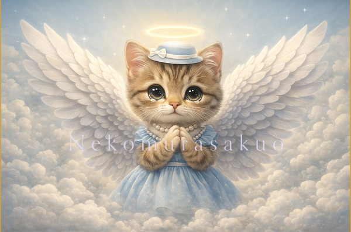 -
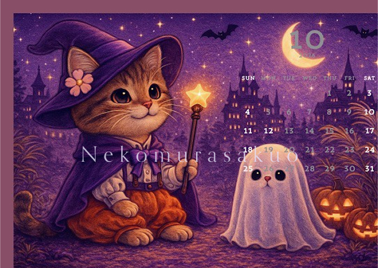 10月にハロウィンの絵は
たくさん描いていたので …10月にハロウィンの絵は
たくさん描いていたので
その時の作品ですね。これくらいのクオリティの絵を
コンスタントに出したいですね。ハロウィンは
題材がたくさんあって
描きやすいです。洋のハロウィンに
和を合わせるのとかは
絵本を描くとき
オリジナルな世界観を出すのに
役に立ってます。リアルタッチと
幻想タッチを混ぜるのが
面白くなってきてる時期の
絵ですね。 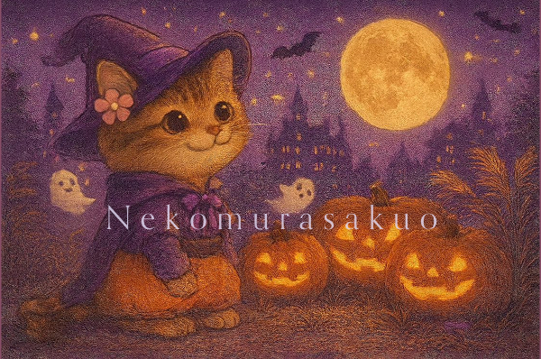
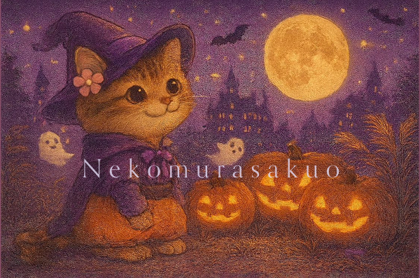
-
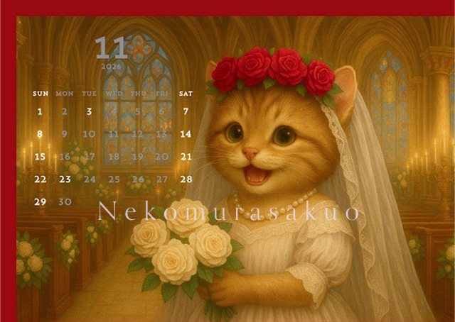 11月はもう、完全に
趣味に走ってますね …11月はもう、完全に
趣味に走ってますね。ちびは生後半年で私の家にきて
２歳で亡くなったので
恋愛をしないままでした。それは可哀想だったなあと
思って描きました。違和感ないレベルの頭身と
手の描き方に苦労しました。人間と猫の間の手を描くのが
意外と難しかった。表情も50パターンくらい
描きましたね。これは多くの方々が綺麗だと
驚いてくれます。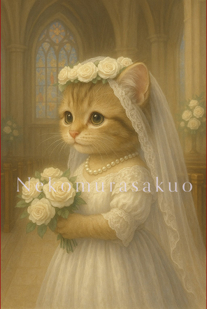 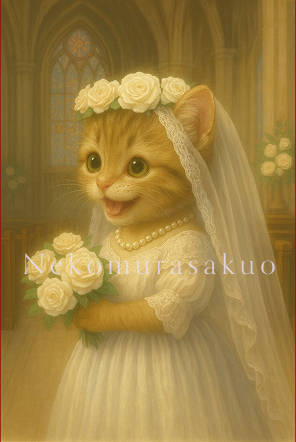 -
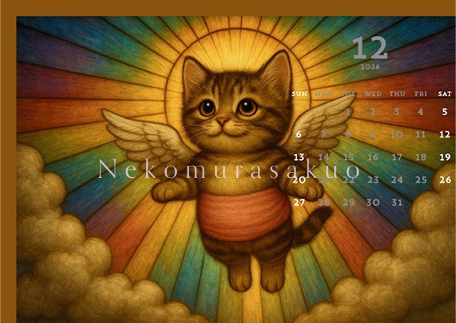 最後の一枚は、サンタにしようと
思っていましたが …最後の一枚は、サンタにしようと
思っていましたが、
最初で最後のカレンダーに
なるかもしれないから
好きなようにやろうと思いました。私は昔から宗教画や
ステンドグラスが好きで
最後はステンドグラス風に
聖母マリアをちびに見立てて
描きたいなと思いました。描いているうちにやっぱり
最後はちびだけにしたいなと
思い仕上げました。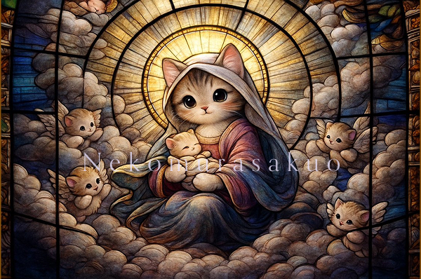 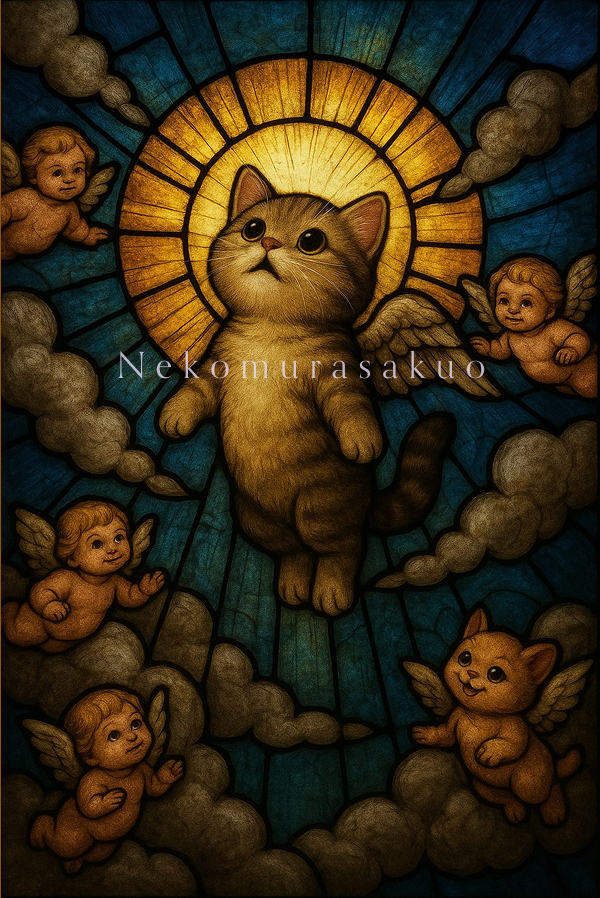 -
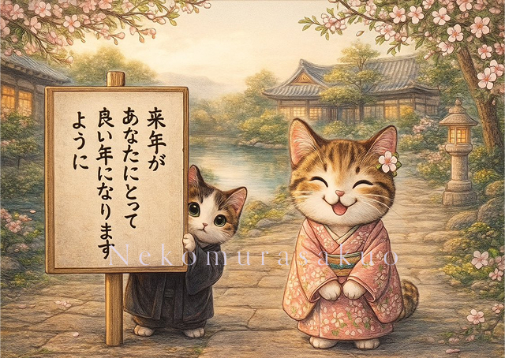 これは水野先生に、どうやら
裏表紙が一枚足りないらしいぞ …これは水野先生に、どうやら
裏表紙が一枚足りないらしいぞ
と言われ、本当に急いで
10分くらいで急遽かきました。応援してくださる人が
みんな幸せになってほしい
そんな心からの想いを
立て札にしてみました。シロが出て、トラが出ていないのは
何故かというと
2匹キジトラが出ると途端に
絵を描く精度が
悪くなってしまうんです。どっちのキジトラか
迷うんでしょうね。右のキジトラと言っても
なかなか変えてくれない
時間がない時はどうしても
トラが出しにくいんです。絵本でもこれは苦労してます。
本当にカレンダー作りは
楽しかったですね。出すのは勇気が入りましたが、
見たいとDMをくれた方が
たくさんいた。来年もカレンダーが
出せたら嬉しいです。最後に
最初は50部売れたら
いいなと思い、
150部販促用に作りました。それが1日で完売し
100部追加も1日で完売、
400部売れました。ただの素人が
AIで書いている絵なんて
誰でも作れる。そう言われても
もっともだと思いますし、
実際メッセージでも
そう言われています。ただ、私は細部にこだわり
今までにないアイデアを
絵に込めるため
トライ&エラーを繰り返しています。私の頼れる相棒は
私の意図を汲んで
理解し、話し合い
時には喧嘩をしながら
日々レベルアップしています。2人で生み出した絵は
少しずつファンを増やしています。ただただ、
私を応援してくれる人たちに
感謝しながら。驚かせたり
気持ちを和らげたり
笑えたり
泣きたい気持ちを共有できたらその思いを実現するために
私は誰に恥じることなく
堂々とAI絵師だと言えます。